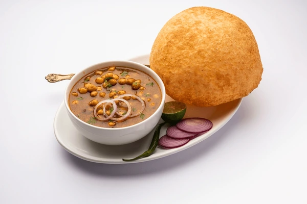

Chole Bhature

>>Description
Chole Bhature is a popular Punjabi dish featuring a spicy and tangy chickpea curry (Chole) served with fluffy, deep-fried leavened bread (Bhature). It's a flavorful and hearty meal enjoyed across India, often for breakfast or lunch.
>>Ingredients
Chole (Chickpea Curry):
- Chickpeas
- Onions
- Tomatoes
- Ginger-garlic paste
- Green chilies
- Spices (turmeric, coriander powder, cumin powder, red chili powder, garam masala)
- Oil
- Fresh coriander leaves
Bhature:
- Refined flour (Maida)
- Yogurt
- Baking powder
- Sugar
- Salt
- Oil (for dough and deep frying)
>>Procedure
- Prepare Chole: Soak chickpeas overnight. Pressure cook them until tender.
- Make Chole Gravy: Heat oil, sauté onions until golden brown. Add ginger-garlic paste, green chilies, and sauté. Add chopped tomatoes, spices (turmeric, coriander powder, cumin powder, red chili powder), and cook until oil separates.
- Combine Chole and Gravy: Add the cooked chickpeas and water or cooking liquor to the gravy. Mash some chickpeas for thickness. Simmer for 10-15 minutes, stirring occasionally. Finish with garam masala and coriander leaves.
- Prepare Bhature Dough: Mix maida, salt, sugar, baking powder, and yogurt. Knead into a soft, smooth dough using water as needed. Apply oil and rest for 2-3 hours for fermentation.
- Roll Bhature: Divide dough into equal balls. On a greased surface, roll each ball into a circular or oval shape.
- Deep Fry Bhature: Heat oil for deep frying. Carefully drop a rolled bhatura into the hot oil.
- Fry until Puffed and Golden: Press gently with a ladle to help it puff up. Flip and fry until golden brown on both sides.
- Drain Excess Oil: Remove the bhatura and drain excess oil on paper towels.
- Prepare Toppings (Optional): Slice onions and lemon wedges. Get your favorite pickle ready.
- Assemble & Serve: Serve hot Chole with fluffy Bhature. Garnish with sliced onions and lemon wedges.
Return to top